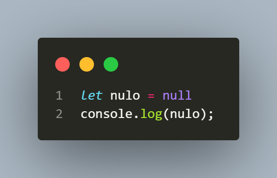
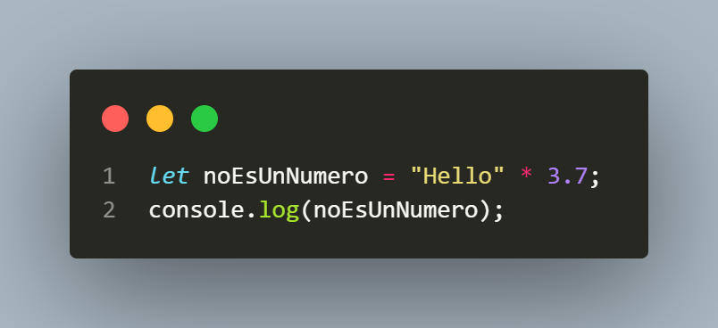

Tanto Null como Undefined van a representar un valor ausente, es decir una variable que no tiene
valor, pero la
gran difrencia es que Undefined
no ha sido inicializada. (se ha creado la variable pero no se ha colocado
nigun
valor)
Al igual que Undefined, Null es un valor especial que significa que la variable esta vacia, pero este es un valor intencionalmente asignado por el programador.
Es un "Resultado" que te da Javascript para indicar que no es posible hacer cierta operación aritmética debido a que alguno de los datos no es del tipo númerico.
